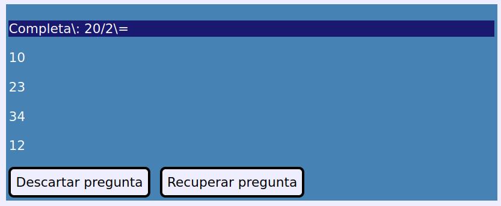

Práctica grupal de creación de preguntas para un cuestionario de la plataforma educativa Moodle.
Crear una aplicación web que permita generar preguntas para la Moodle usando el formato GIFT.
Referencia:
https://docs.moodle.org/all/es/Formato_GIFT
Ejemplo de cuestionario en formaro GIFT con tres preguntas:
¿En qué año se produjo la revolución española de 1868 conocida como La gloriosa?
{
=1868
~%-25%1912
~%-25%1848
~%-25%1234
}
¿De qué color es el caballo blanco de Santiago?
{
=Blanco
~%-25%Negro
~%-25%Marrón
~%-25%Azul
}
Completa\: 20/2\=
{
=20/2\=10
~%-25%12 porque 12\:4*2\=20
~%-25%34
~%-25%2 \{porque 20 al revés es 02 \= 2\}
}
Una pregunta en un cuestionario consta de:
Importante: la web tiene que utilizar como codificación UTF-8. Moodle sólo acepta cuestionarios creados con esta codificación.
Crea una web que contenga los elementos que se describen a continuación. La presentación, organización de dichos elementos queda a criterio del grupo de alumnos.
Un encabezado de primer nivel <h1> con el siguiente texto:
Cuestionarios para la moodle
A continuación aparecerá una advertencia con el siguiente texto:
Importante: existen caracteres que no se pueden usar ni en las preguntas ni en las respuestas, pues tienen un significado especial en el formato GIFT de la spreguntas de Moodle (para más información visite la página del formato GIFT).
Los caracteres que hay que evitar son los siguientes:
Para evitar problemas, lo ideal sería no usar esos caracteres. En caso de que sea estrictamente necesario usarlos, se usará el caracter \ automáticamente para quitarles el significado especial. Por ejemplo, A = B + C ⇨ A \= B + C.
Imagen de ejemplo:
A continuación tendremos un formulario que constará de:
Además tendremos una botonera con los siguientes botones:
Finalmente tendremos una división con id="divErrores" en el que se mostrarán los mensajes de error.
Finalmente aparecerá una división con id="divPreguntas" en la que se mostrarán todas las preguntas creadas.
A continuación se describe la funcionalidad mínima de la aplicación.
Al arrancar la aplicación se comprobará si hay un objeto de tipo Cuestionario guardado en el localStorage. Si lo hay, se recupera (restaurándole los métodos) y se muestran las preguntas que contiene en la división divPreguntas. Para ello se usará sobre cada pregunta el método preguntaToHTMLDiv() que devolverá una división HTML con una pregunta formateada junto con sus respuestas.
Si no hay un cuestionario guardado se mostrará el mensaje Todavía no hay preguntas creadas y se creará un nuevo objeto de tipo Cuestionario vacío.
Importante: ver más adelante los métodos y propiedades de un objeto Cuestionario.
Al pulsarse el botón se eliminarán todas las preguntas del cuestionario que se encuentran en el localStorage y también se eliminarán del objeto Cuestionario y la división divPreguntas mostrará el mensaje Todavía no hay preguntas creadas.
Cuando se pulse el botón se comprobará si están rellenos todos los textboxes y el textarea. Si no es así se mostrará un mensaje de error en la división de errores y no se hará nada más.
Si todos los campos están rellenos, se procedará a escapar el texto de todos ellos. Este procedimiento consiste en reemplazar cada aparición de un caracter especial (los que tienen un significado especial en el formato GIFT) y anteponerles el caracter de escape delante \.
Por ejemplo:
Completa: 20/2=
Se transforma en:
Completa\: 20/2\=
A continuación se creará un objeto de tipo Pregunta que se añadirá al objeto Cuestionario mediante el método añadirPregunta().
Importante: ver más adelante los métodos y propiedades de un objeto Pregunta y de un objeto Cuestionario.
Finalmente, la pregunta generada se mostrará en la división divPreguntas junto con dos botones nuevos: Descartar pregunta y Recuperar pregunta. Para esto se usará el método preguntaToHTMLDiv() del objeto Cuestionario. A esta división se le añadirán luego los dos botones (Descartar pregunta y Recuperar pregunta).
Imagen de ejemplo:

Cuando se pulse este botón, se recuperará el texto de la pregunta, la respuesta correcta y las erróneas de la pregunta guardada en el objeto Cuestionario mediante el método getPregunta() que devolverá un objeto de tipo Pregunta del que se podrán recuperar estos valores.
A continaución se desescapará el texto (se quitará la \ delante de los caracteres que fueron escapados al crear la pregunta) y se mostrarán en el textarea y los textboxes correspondientes.
Cuando se pulse este botón, la pregunta será descartada y se eliminará del objeto Cuestionario mediante el método descartarPregunta() y
y no se mostrará más en la división divPreguntas (sí se seguirán mostrando el resto de las preguntas).
Si esta pregunta era la última que quedaba en el cuestionario, se mostrará en la división divPreguntas el mensaje Todavía no hay preguntas creadas.
Cuando se pulse este botón se almacenará el objeto Cuestionario con las preguntas que contiene en el localStorage.
Importante: Ten en cuenta que al stringificar un objeto a una cadena JSON sus métodos se perderán. JSON es un formato de intercambio de información y por tanto no puede contener métodos. Al recuperar el objeto se tendrá que reasignarle los métodos necesarios.
Cuando se pulse este botón se creará un fichero de texto con el contenido de las preguntas del localStorage que se podrá descargar.
Esto funcionará así:
① Se declara un array arrContenido que contendrá las líneas que aparecerán en el fichero, por tanto, cada elemento del array será una cadena de caracteres terminada con un retorno de carro ("\n").
② Cada pregunta está separada de la siguiente por un retorno de carro.
③ Una pregunta en el fichero tendrá esta forma:
¿Qué hace la función Average (C6\:D6) en una hoja de cálculo?
{
=... calcula la media de los números contenidos en las celdas C6 hasta la D6.
~%-25%Calcula el promedio de los números contenidos en un documento de texto.
~%-25%Calcula la suma de los números contenidos en la fila 6.
~%-25%Esa función dará un error, puesto que el rango C6\:D6 es incorrecto.
}
Es decir:
④ Ahora se creará el fichero y se añadirá un hiperenlace en alguna parte de la web. En el código de ejemplo de abajo se usa una división cuyo id es urlFichero.
let fichero = new File(arrContenido, { type: "text/plain; charset=UTF-8" })
var url = window.URL.createObjectURL(fichero);
let divURL = document.querySelector('#urlFichero');
divURL.innerHTML = '<a download="preguntas.txt" href="' + url + '">Descargar fichero (' + idPreguntas + ')</a>'
Este es el diagrama UML básico:
Estas clases estarán implementadas en el fichero objetos.js que será enlazado desde el HTML de la página.
Es obligatorio implementar todos los métodos y propiedades que aparecen.
Al crearse un objeto de tipo Cuestionario el constructor generará un array vacío para almacenar las preguntas.
El método añadirPregunta() recibe un objeto de tipo Pregunta y lo guarda en el array.
El método descartarPregunta() recibe el id de la pregunta que se tendrá que eliminar del array.
El método getPregunta(i) devuelve el objeto de tipo Pregunta que tenga el id que se pasa como parámetro.
El método preguntaToHTMLDiv() recibe un id y devuelve en una división el resultado de llamar al método toHTMLUl() de la pregunta cuyo id se pasa como parámetro.
La clase Pregunta seguirá este patrón:
En el constructor de la pregunta tendrán que aparecer todos los datos del objeto.
El método toHTMLUl() devolverá un elemento <ul> que contendrá los datos de la pregunta (el texto, respuesta correcta y todas las incorrectas). Esta lista se usará desde el método preguntaToHTMLDiv() del cuestionario para poder insertarlo en la división divPreguntas.
Notas:
Este método deberá devolver algo parecido a esto (una vez aplicado el CSS):
Javier Mancera Fernández
https://www.twitch.tv/profesorinfo